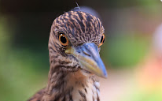
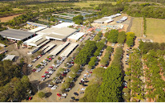

Zoológico de Sorocaba

O Parque Zoológico Municipal Quinzinho de Barros –
Zoológico Municipal de Sorocaba é um jardim zoológico
situado no município de Sorocaba, estado de São Paulo,
no Brasil, sendo considerado o segundo zoológico do Brasil em número de espécies.
Site Zoológico
Parque Maeda

O Grupo Maeda é um complexo turístico localizado em Itu,
cidade a 100km de São Paulo. O local oferece atrações de
lazer para crianças e adultos de todas as idades e mescla
a diversão, o aconchego da natureza e a cultura oriental em um único espaço.
Site Parque Maeda
Fazenda Ipanema
A Floresta Nacional de Ipanema, que ocupa uma área da antiga
Fazenda Ipanema, em Iperó, foi criada em 20 de maio de 1992 e
abriga os remanescentes da primeira siderúrgica americana. Jazidas
de ferro foram encontradas no morro Araçoiaba há cerca de 429 anos.
A Flona de Ipanema é um dos maiores ecossistemas de Mata Atlântica
existentes hoje no Brasil. As atividades relacionadas ao ferro naquela
região, desde o século XVI, contribuíram para a origem de várias cidades
da região de Sorocaba e o desenvolvimento do Brasil.
Site Fazenda Ipanema